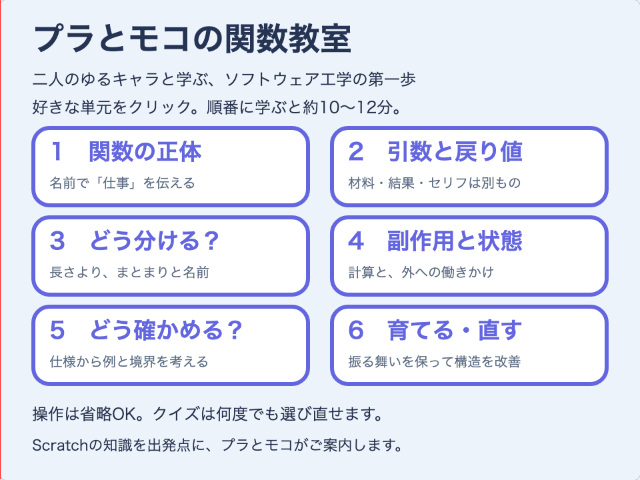

プラとモコのエディター教室
プラとモコの関数教室
Scratchの定義ブロックを出発点に、呼び出し側から読みやすい処理を設計します。
紙芝居で試す
約10〜12分。どの単元からでも始められます。解説、クイズ、答えの順に進みます。
- Plus Editorで「ファイル」→「SB3ファイルを開く…」を選びます。
- 実行画面を引出しに表示して緑の旗を押し、単元を選びます。ステージにフォーカスがある間はSpaceで説明やGuideを先へ進められます。

紙芝居で「関数れんしゅう」スプライトを開くと「星を並べる」の呼び出しがあります。Gキーで星を出し、個数や間隔を変えてもう一度試します。標準の定義ブロックは手続きなので、戻り値は料金の計算例で学びます。
1. 関数の正体
呼び出し側を「星を並べる」と読めるようになると、繰り返しやクローンの詳細を読み直す回数が減ります。定義を直す場所と、実行して使う場所がはっきりします。
- 名前は仕事の目的を表す
- 定義と呼び出しを区別する
- 再利用に加え、考えを整理するためにも使う
試すこと 作品内の処理を一つ選び、何をするかが伝わる名前に変えてみます。呼ぶ側だけを読んで何が起きるか説明します。
2. 引数と戻り値
仮引数は定義にある受け取り口、実引数は呼び出すときに渡す具体的な値です。戻り値がある関数なら、その値を次の処理で使えます。
- 引数：仕事に必要な材料
- 戻り値：呼んだ側が使える結果
- Scratch標準の定義ブロックは値を返さない
試すこと 料金(3, 120) の360を、表示する例とさらに割引を計算する例に分けて書きます。表示だけの場合に、呼び出し側は何を受け取れるか考えます。
3. どう分ける？
「星を並べる」と「音量を設定する」は、変えたくなる理由が異なります。目的を説明しにくい関数は、呼び出しだけで手順が読める単位に分ける候補です。
- まとまりのある仕事を、目的が伝わる名前に
- 変更の理由が違う仕事は分離を検討
- 細分化しすぎて全体を読みにくくしない
試すこと 星の配置処理を読み、個数と間隔を渡す部分と、配置する手順を見分けます。自分のスクリプトでも同じ分け方が役立つか考えます。
4. 副作用と状態
位置、音、スコアの変更は作品に必要な働きです。計算と状態変更を区別し、関数が読み書きする状態が名前や引数から分かるようにします。
- 副作用は必要。ただし影響を明示する
- 計算と外部への作用を分けて考える
- 隠れた共有状態・乱数・時刻に注意
試すこと 得点が変わる処理を探し、入力になる値と、呼んだ後に変わる値を書きます。別のスプライトが同じ値を書いていないかも確認します。
5. どう確かめる？
入力と結果の約束を先に決めると、実装とは独立に期待値を選べます。普通の入力、下限の0、その隣の1を試すと繰り返しのずれを見つけやすくなります。
- 入力・結果・対象外入力の約束を決める
- 普通の例と境界、不具合の再現例を選ぶ
- 期待値は実装の写しから作らない
試すこと 星の個数を0、1、5に変え、Gキーを押して期待した個数が一瞬並ぶか観察します。幅や間隔で重なる場合は見分けやすく調整します。
6. 育てる・直す
リファクタリングでは、呼び出し側から見える動作を保ちながら、名前や処理の分け方を改善します。小さい変更の前後で同じ入力を試せば、原因を絞れます。
- 振る舞いを保つ、小さな構造の改善
- 重複は同じ知識か、変更の理由も考える
- 確認と差分レビューを組み合わせる
試すこと 星を出す処理の名前を読みやすくした後、同じ個数・間隔で動かします。星の数と配置が変わっていないことを確認します。